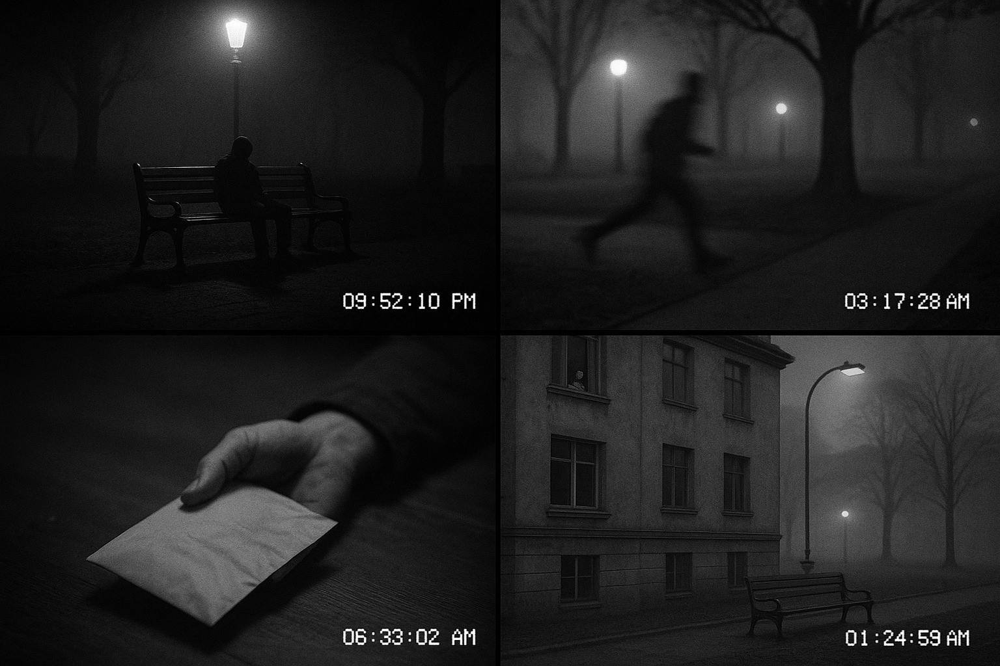

A perícia localizou uma câmera de segurança da prefeitura que registrou a madrugada do crime. As imagens, exibidas em quatro quadros sequenciais, mostram uma figura imóvel no banco da praça, a chegada da polícia e o envelope sendo recolhido. Um novo depoimento foi coletado — desta vez de Dona Neide, uma moradora do prédio em frente à praça, que costuma observar a movimentação da janela.
Depoimento de Dona Neide:

Com base nas imagens da câmera de segurança e no depoimento de Dona Neide, organize os acontecimentos na ordem cronológica correta. Atenção: alguns eventos não estão na imagem, outros só são mencionados no áudio.
- O envelope é recolhido pela perícia
- Dona Neide escuta um barulho estranho
- Figura sentada aparece no banco durante a madrugada
- Viatura e agentes da perícia chegam à praça
- Corpo continua imóvel ao amanhecer
- Luz do poste apaga automaticamente
- Dona Neide vê um vulto indo embora